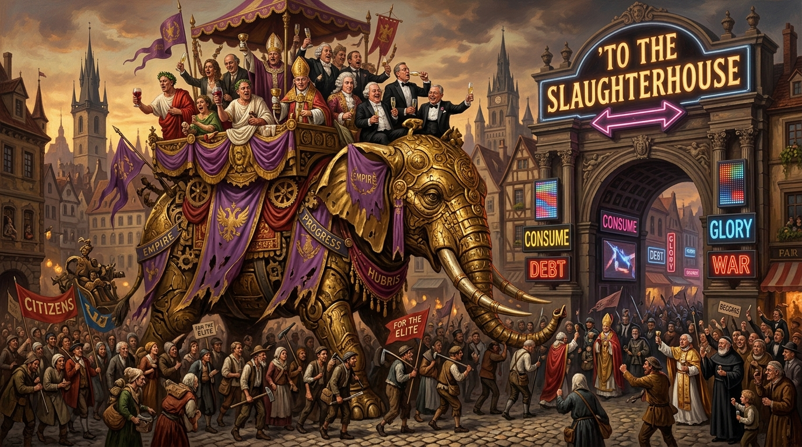

The Art of Historical Elephantshit.
A relentless satirical chronicle across human history: from Roman bread and circuses to feudal divine rights, Enlightenment cheques, industrial slaughterhouses, and sleek 2026 algorithmic gaslighting.

The Six Evolutionary Epochs of Elephantshit
Tracking the unbroken parade of well-dressed liars waving silk flags while the crowd applauds its own captivity.
The Classical & Feudal Foundations
From the moment political power realized fear and circus bread were cheaper than honesty, the imperial game was codified:
Bread, circuses, and rumours of barbarians at the gates. The universal lubricant of empire smeared across forum walls: “Don’t worry, everything is fine, and if it isn’t, it’s your fault for noticing.”
Divine right declared by kings who never met God. Priests explaining that curiosity is a sin, especially curiosity regarding why the bishop’s wine cellar was larger than the village.
The art of historical Elephantshit has always been a masterpiece of human invention. A long, unbroken parade of well dressed liars waving silk flags while the crowd applauds its own captivity. From the moment some Roman senator realised you could keep a population docile with bread, circuses, and a few well-timed rumours about barbarians at the gates, the game was set. Elephantshit became the universal lubricant of empire, smeared across every forum wall and whispered into every citizen’s ear with the same reassuring tone: Don’t worry, everything is fine, and if it isn’t, it’s your fault for noticing.
“Elephantshit became the universal lubricant of empire, smeared across every forum wall and whispered into every citizen’s ear with the same reassuring tone: Don’t worry, everything is fine, and if it isn’t, it’s your fault for noticing.”
In the Middle Ages, Elephantshit had matured into a fine art. Kings declared divine right with the confidence of men who had never met God but were certain He’d sign the paperwork. Priests warned peasants that curiosity was a sin, especially curiosity about why the bishop’s wine cellar was larger than the village. Every plague, famine, and tax hike came with a soothing explanation: The Lord works in mysterious ways, and one of those ways is apparently taking your last chicken. The herd trudged on, heads down, comforted by the notion that obedience was noble and suffering was holy, even as the nobility suffered nothing except the occasional hangover.
Then came the Enlightenment, which promised reason, liberty, and the end of Elephantshit. Naturally, this was Elephantshit of the highest grade. Philosophers wrote treatises about freedom while accepting cheques from monarchs. Revolutions erupted, proclaiming equality, and promptly installed new elites who discovered that the old tricks worked beautifully as long as you changed the slogans. The sign reading TO THE SLAUGHTERHOUSE was repainted with inspiring mottos about progress, destiny, and the glorious future. The cattle marched on, mooing patriotically.
“The sign reading TO THE SLAUGHTERHOUSE was repainted with inspiring mottos about progress, destiny, and the glorious future. The cattle marched on, mooing patriotically.”
By the nineteenth century, Elephantshit had become industrialised. Newspapers printed whatever their owners whispered. Politicians mastered the art of promising everything while meaning nothing. Empires justified conquest with noble missions to civilise people who inconveniently lived on land full of resources. The herd was told that sacrifice was honourable, especially when it involved their sons, their wages, and occasionally their reason. Meanwhile, the elites toasted each other with champagne so expensive it could have fed a village for a year, though feeding villages was never part of the business plan.
The twentieth century refined Elephantshit into a global spectacle. Propaganda departments discovered that if you repeat a lie loudly enough, people will not only believe it but defend it with passion. Governments assured citizens that wars were necessary, surveillance was protective, and inequality was natural. Corporations joined the chorus, insisting that happiness could be purchased, freedom was a brand, and the only thing standing between civilisation and chaos was the continued worship of quarterly profits. The herd dutifully followed the arrows, never noticing that the slaughterhouse had been upgraded with automatic doors.
In 2026, Elephantshit has reached its final evolutionary form: sleek, digital, and delivered straight into your pocket. The elites no longer need to hide their greed; they livestream it. They no longer need excuses; they have algorithms. They no longer need to fondle power behind closed doors; they do it on yachts while influencers applaud. The cattle are told that everything is fine, that inequality is a natural phenomenon like rain, that billionaires are benevolent shepherds guiding humanity toward a brighter tomorrow. The sign TO THE SLAUGHTERHOUSE now flashes in neon, but the herd is too busy scrolling to notice.
“The modern con is elegant. Distract the masses with endless entertainment, drown them in contradictory information, and convince them that their exhaustion is a personal failing rather than a designed condition.”
The modern con is elegant. Distract the masses with endless entertainment, drown them in contradictory information, and convince them that their exhaustion is a personal failing rather than a designed condition. Tell them that the elites deserve everything because they “worked hard,” even if the only work involved was choosing which private island to buy. Tell them that the system is fair, even as the system quietly ensures that every resource, every institution, every lever of power remains in the hands of those already drunk on privilege. Tell them that change is impossible, dangerous, or inconvenient. Above all, tell them that the slaughterhouse is actually a theme park.
As the final flourish, political Elephantshit offers its richest vintage. The Constitutionally Unconstitutional Constitution stands as the crown jewel of procrastinatory flagellation, a document that beats itself senseless with its own principles while congratulating itself for the bruises. It promises liberty with one hand and quietly pockets the keys with the other, all while assuring the herd that this is not hypocrisy but “necessary balance,” a phrase so drenched in Elephantshit it should be bottled and sold as perfume for aspiring tyrants. The elites adore this sacred text because it allows them to pose as guardians of justice while reclining in opulence so thick it needs its own postcode. They toast their brilliance with vintage champagne, applaud their own restraint, and declare that the system works perfectly provided you never ask who it works for. The cattle are told that constitutional contradictions are not flaws but features, elegant complexities far beyond the comprehension of ordinary mortals. And so the herd nods, reassured that the slaughterhouse is constitutionally mandated, legally justified, and morally endorsed by the very document designed to protect them.
The Immutable Truth
“Historical Elephantshit has always relied on one simple truth: people prefer a comforting lie to a disturbing reality. The elites know this. They count on it. They cultivate it. They fertilise it. They profit from it, endlessly, shamelessly... The art has never changed. Only the packaging has. The world is waking up.”